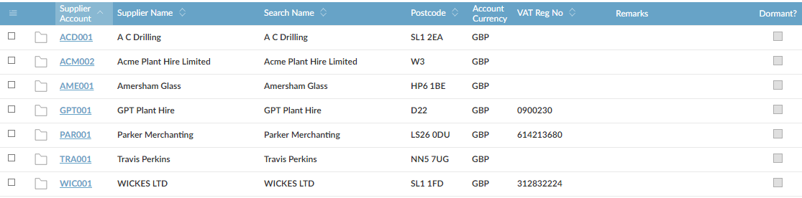

and Previous Page
and Previous Page  buttons to view the next or previous set of records.
buttons to view the next or previous set of records. button. To show the last record, click the Last
button. To show the last record, click the Last  button.
button. next to the column heading, and are highlighted when you move the mouse pointer over them. The heading of the column that is currently sorted is highlighted. To change the order in which records are displayed, click a sortable column heading. If the small triangle is pointing up, records are sorted with that column in ascending order; if the triangle is pointing down, records are sorted in descending order.
next to the column heading, and are highlighted when you move the mouse pointer over them. The heading of the column that is currently sorted is highlighted. To change the order in which records are displayed, click a sortable column heading. If the small triangle is pointing up, records are sorted with that column in ascending order; if the triangle is pointing down, records are sorted in descending order.

NOTE
On some browse screens, there may be restrictions on the number of records you can sort. If there are too many records to sort,
next to the column label. buttons, instead of the whole page being refreshed, only the data in the browse rows changes. However, if you show the detail of a record, update a record, change the sort order or use the Show All
buttons, instead of the whole page being refreshed, only the data in the browse rows changes. However, if you show the detail of a record, update a record, change the sort order or use the Show All  or Total
or Total  buttons, the whole page will be refreshed, with a white (blank) screen showing before the screen is displayed again.
buttons, the whole page will be refreshed, with a white (blank) screen showing before the screen is displayed again.